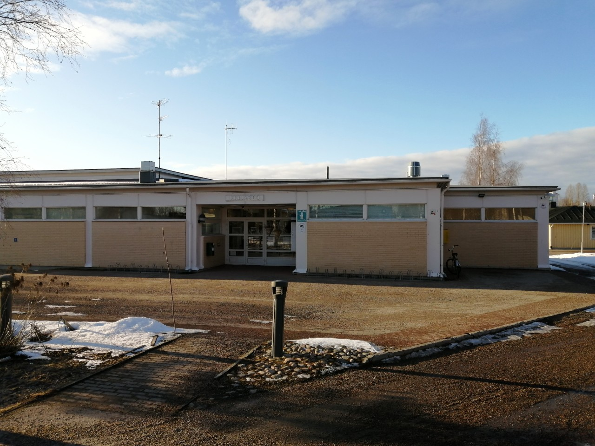

Tourists
Kirjato Info
Oulaisten kirjasto löytyy turisti info-piste. Pääoven ulko-oven vierestä löytyy tiedotustaulu paikka kunnan tulevista tapahtumista. Sisältä löytyy virallinen infopiste. Siellä on esitteitä paikkakunnasta monella eri kielellä ja kirjastontyöntekijät neuvovat kysyjää.
Sisällä on myös näyttelyitä ja laaja kirja valikoima. Pelihuone nuorille ja mahdollisuus kuunnella musiikkia levyiltä. Kirjastolla on tapahtumia eri ryhmille.
Tervetuloa
Pieniä infoja
Oulaisiin aukaistiin uusi uimahalli 2017. Altaita löytyy kuntouimareille, lapsille ja vesijumppalaisille. Rentoudu hierovissa vesisuihkuissa. Vesiliukumäki antaa vauhtia hurjapäille. Lopuksi voi herkutella kahvion herkuilla.
Oulaisten logon on suunnitellut Ahti Hammar vuonna 1953. Se on yksi Suomen harvinaisuuksista yksityiskohtineen ja värineen. Siinä on rapu vihreällä nurmella.
Jos vaakunaa haluaa käyttää sivustollaan sitä varten pitää pyytää kaupungilta lupa.

- Hyvä, hyvä sano Hynnisen muori ku pankolta putos.
- Leipä loppu Lehtolasta, piti lähtiä Äijälään.
- Pulakasta mentiin Pussaan, sano Piipsjärven isäntä ku taloja vaihto.
- Sepä on ku Asikaisen rakennus.
- Totinen ku Upolan pottuvoi.
Lähde: Kirjasto Virma
Oulaisten kirkko

"Ensimmäinen kirkko rakennettiin samalle paikalle vuonna 1682. Nykyinen Oulaisten puukirkko on rakennettu vuonna 1753. Oulaisen kirkko on Kalajoen rovastikunnan ja Pyhäjokilaakson vanhin kirkko. Kirkon kellot soivat kirkon vieressä olevasta kellotapulista. Kirkkoon mahtuu maksimissaan 700 henkilöä, kun urkuparven istuimet lasketaan mukaan."
Vihaisia rapuja VAROKAA
Olette kuulleet vihaisista linnuista!
Muttette vihaisista ravuista!
Näitä tarttuu onkiin ja verkkoihin. Lapset itkevät ja mummot pyörtyvät.
Nakkaa takaisin Pyhäjokeen!